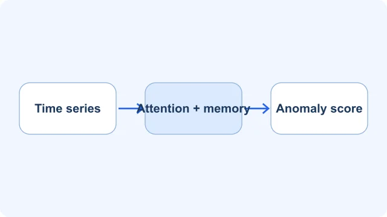
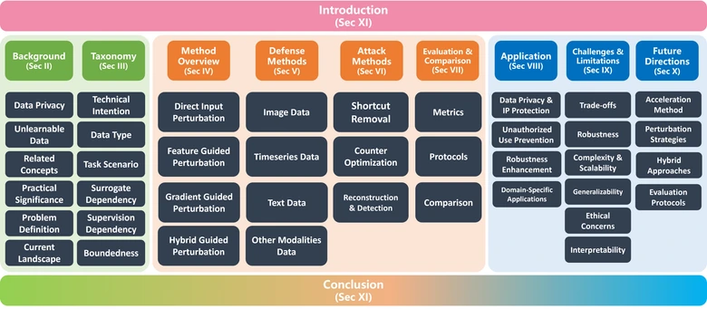

面向鲁棒不可学习数据的小波域隐写
Wavelet Domain Steganography for Robust Unlearnable Data
Pattern Recognition · Vol. 180, Part D · 114422
将类别特定信号嵌入小波子带，在保留图像高频细节的同时干扰未经授权的模型训练，并在常见数据增强和对抗训练条件下验证保护效果。

Wavelet Domain Steganography for Robust Unlearnable Data
Pattern Recognition · Vol. 180, Part D · 114422
将类别特定信号嵌入小波子带，在保留图像高频细节的同时干扰未经授权的模型训练，并在常见数据增强和对抗训练条件下验证保护效果。
GSM: Global Semantic Memory
Pattern Recognition · Vol. 169 · 111950 · 2025 年在线发表
研究重建式检测器为何会漏检与正常样本共享局部特征的异常。通过级联记忆、可配置稀疏化和随机遗忘，在潜在空间中学习全局语义。

K-Space Bispectrum Steganography for Robust Unlearnable Data
ACM Multimedia (ACM MM) · 爱尔兰都柏林
利用傅里叶双谱隐写，将类别信息嵌入图像的幅度谱和相位谱，在保持扰动难以察觉的同时，降低模型从受保护数据中学习有效信息的能力。

Contrast Memory for Unsupervised Anomaly Detection
IEEE ICASSP · 印度海得拉巴
提出面向多变量时间序列的轻量模型 DiMER。通过对比记忆学习正常模式，并综合重建空间、时间空间和潜在空间的信息计算异常分数。

HYMAN: Hybrid Memory and Attention Network for Unsupervised Anomaly Detection
IEEE ICASSP · 印度海得拉巴
用注意力捕捉多变量时间序列中的短期依赖，用记忆模块保留长期模式，并结合时序特征与潜在特征评估异常。

A Survey on Unlearnable Data
arXiv:2503.23536
梳理不可学习数据的生成方法、公开基准、评估指标和应用场景，并比较保护强度、视觉保真度、计算效率与鲁棒性之间的权衡。

Cascade Memory for Unsupervised Anomaly Detection
ECAI · 西班牙圣地亚哥-德孔波斯特拉
提出用于学习全局语义的级联记忆架构，通过稀疏化和随机遗忘缓解模型对异常样本的过度泛化。

Memory Mechanism for Unsupervised Anomaly Detection
UAI · PMLR 216 · pp. 1219–1229 · 美国宾夕法尼亚州匹兹堡
用容量受控的可微记忆存储典型正常模式，并通过检索这些模式，限制重建模型对未见异常的重建能力。

Digital Twin for Fault Detection Based on Hybrid Neural Networks
International Journal of Information Technology · Vol. 25, No. 2
结合卷积自编码器与 LSTM 建模工业系统的正常行为，通过实际观测与预测之间的偏差识别故障，并在安全水处理基准上进行评估。